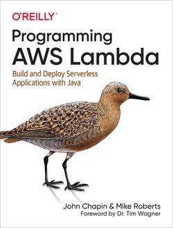
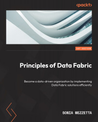
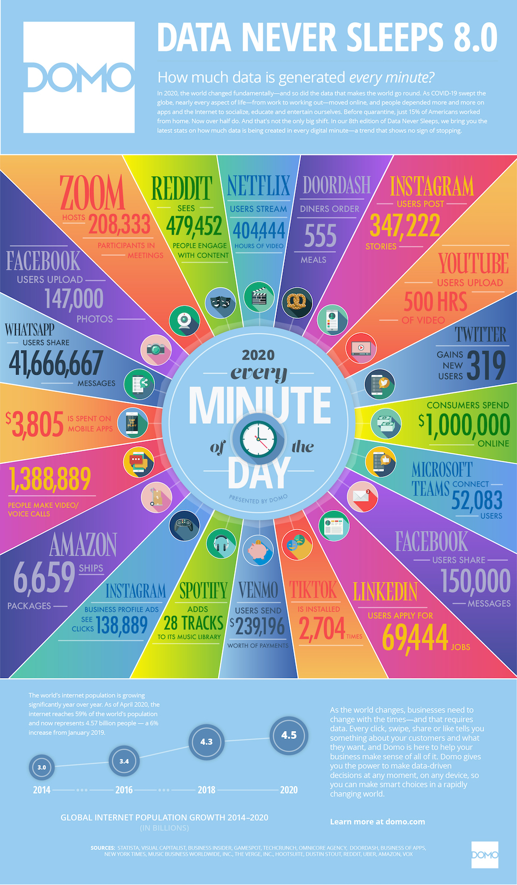
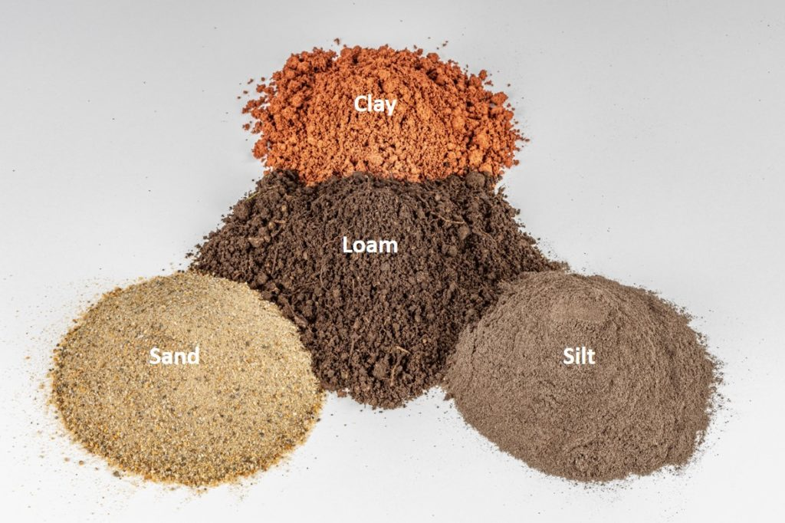
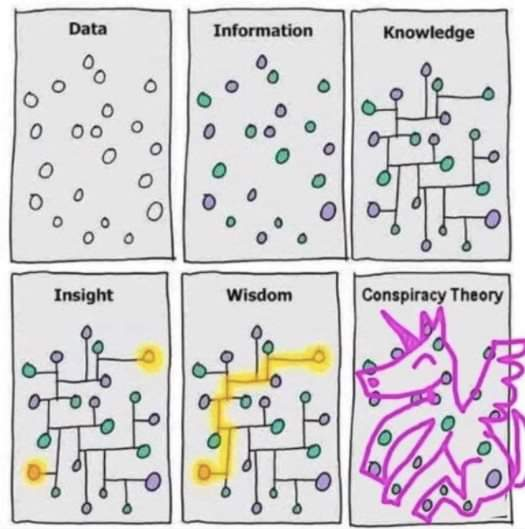
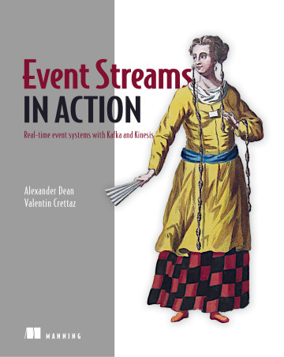
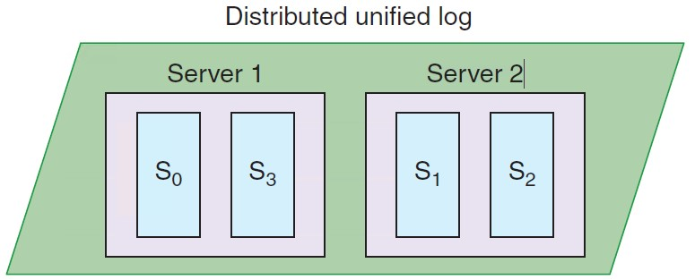

Big Data and Cloud Platforms (Module 2)
Teaching material




How did we get here?

Case study: photo gallery


Data platform
Database
“A database is a structured and persistent collection of information about some aspect of the real world organized and stored in a way that facilitates efficient retrieval and modification. The structure of a database is determined by an abstract data model. Primarily, it is this structure that differentiates a database from a data file.”

Özsu M.T. (2018) Database. In: Encyclopedia of Database Systems. Springer, New York, NY. https://doi.org/10.1007/978-1-4614-8265-9_80734
Data platform
Data Warehouse
“A collection of data that supports decision-making processes. It provides the following features: subject-oriented, integrated and consistent, not volatile.”

Matteo Golfarelli and Stefano Rizzi. Data warehouse design: Modern principles and methodologies . McGraw-Hill, Inc., 2009.
Data platform
Schemaless databases
There is no predefined schema the data must conform to before it’s added to the database. As a result, you don’t need to know the structure of your data, enabling you to store all your data more easily and quickly.

Data platform

Data provenance

Simmhan, Yogesh L., Beth Plale, and Dennis Gannon. “A survey of data provenance techniques.” Computer Science Department, Indiana University, Bloomington IN 47405 (2005): 69.
Data provenance
- Data provenance, an example of data management
- Metadata pertaining to the history of a data item
- Pipeline including the origin of objects and operations they are subjected to
- We have a standard: https://www.w3.org/TR/prov-dm/

Data provenance
- Entity
- Physical/conceptual things
- Activity
- Dynamic aspects of the world, such as actions
- How entities come into existence, often making use of previously existing entities
- Agent
- A person, a piece of software
- Takes a role in an activity such that the agent can be assigned some degree of responsibility for the activity taking place

Compression
- Summarization / compression
- Present a concise representation of a dataset in a comprehensible and informative manner

Ahmed, Mohiuddin. “Data summarization: a survey.” Knowledge and Information Systems 58.2 (2019): 249-273.
Data profiling
- Data profiling (naumann2014data?)
- A broad range of methods to efficiently analyze a given data set
- E.g., in a relational scenario, tables of a relational database are scanned to derive metadata, such as data types, completeness and uniqueness of columns, keys and foreign keys, and occasionally functional dependencies and association rules

Entity resolution
- Entity resolution
- (also known as entity matching, linking)
- Find records that refer to the same entity across different data sources (e.g., data files, books, websites, and databases)

Papadakis, George, et al. “Blocking and filtering techniques for entity resolution: A survey.” ACM Computing Surveys (CSUR) 53.2 (2020): 1-42.
Data versioning
- Version control
- A class of systems responsible for managing changes to computer programs, documents, or data collections
- Changes are identified by a number/letter code, termed the revision/version number
- However, data pipelines are not only about code bult also about
- Model Version control
- Data Version Control
- Model Parameter Tracking
- Model Performance Comparison

Support CRUD (Create, Read, Update, Delete) operations with versions
E.g., on AWS (PUT, GET, DELETE), what about update?


https://docs.aws.amazon.com/AmazonS3/latest/userguide/versioning-workflows.html (accessed 2022-08-01)
In action

Lab: California housing prices
Data lakehouse
- Data lakehouse
- Data management architecture that combines the flexibility, cost-efficiency, and scale of data lakes with the data management and ACID transactions of data warehouses, enabling business intelligence (BI) and machine learning (ML) on all data
- Vendor lock in

https://www.databricks.com/glossary/data-lakehouse

| Data warehouse | Data lake | Data lakehouse | |
|---|---|---|---|
| Data format | Closed, proprietary format | Open format (e.g., Parquet) | Open format |
| Types of data | Structured data, with limited support for semi-structured data | All types: Structured data, semi-structured data, textual data, unstructured (raw) data | All types: Structured data, semi-structured data, textual data, unstructured (raw) data |
| Data access | SQL-only, no direct access to file | Open APIs for direct access to files with SQL, R, Python and other languages | Open APIs for direct access to files with SQL, R, Python and other languages |
| Reliability | High quality, reliable data with ACID transactions | Low quality, data swamp | High quality, reliable data with ACID transactions |
| Governance and security | Fine-grained security and governance for row/columnar level for tables | Poor governance as security needs to be applied to files | Fine-grained security and governance for row/columnar level for tables |
| Performance | High | Low | High |
| Scalability | Scaling becomes exponentially more expensive | Scales to hold any amount of data at low cost, regardless of type | Scales to hold any amount of data at low cost, regardless of type |
| Use case support | Limited to BI, SQL applications and decision support | Limited to machine learning | One data architecture for BI, SQL and machine learning |
- Key technologies used to implement open source Data Lakehouses
- Databricks’ Delta Lake
- Apache Hudi
- Apache Iceberg
https://databricks.com/blog/2021/05/19/evolution-to-the-data-lakehouse.html
Data platform
Is it a Lakehouse with another name?
- A Lakehouse is a part of data platform, a layer that enables to query multiple data sources (with SQL/Spark) transparently by using some metadata (JSON) log
- Still, you could get a data platform where such transparence is not mandatory or could be achieved by different techniques (e.g., multistore [1])
[1] Forresi, C., Gallinucci, E., Golfarelli, M., & Hamadou, H. B. (2021). A dataspace-based framework for OLAP analyses in a high-variety multistore. The VLDB Journal, 30(6), 1017-1040.
Is it a new name for BI?
No, in a data platform you also need to manage (streams of) operational data and OLTP workloads

From DevOps…
DevOps combines development and operations to increase the efficiency, speed, and security of software development and delivery compared to traditional processes.
DevOps practices enable software development (dev) and operations (ops) teams to accelerate delivery through automation, collaboration, fast feedback, and iterative improvement

https://about.gitlab.com/topics/devops/ (accessed 2023-06-03)

… to DataOps
DataOps refers to a general process aimed to shorten the end-to-end data analytic life-cycle time by introducing automation in the data collection, validation, and verification process

Munappy, A. R., Mattos, D. I., Bosch, J., Olsson, H. H., & Dakkak, A. (2020, June). From ad-hoc data analytics to dataops. In Proceedings of the International Conference on Software and System Processes (pp. 165-174).
DataOps

- From DevOps to DataOps
- “A collaborative data management practice focused on improving the communication, integration and automation of data flows between data managers and data consumers across an organization”
- Data analytics improved in terms of velocity, quality, predictability and scale of software engineering and deployment
- Some key rules
- Establish progress and performance measurements at every stage
- Automate as many stages of the data flow as possible
- Establish governance discipline (governance-as-code)
- Design process for growth and extensibility

Gartner, 2020 https://www.gartner.com/smarterwithgartner/how-dataops-amplifies-data-and-analytics-business-valueAndy Palmer, 2015 https://www.tamr.com/blog/from-devops-to-dataops-by-andy-palmer/ William Vorhies, 2017 https://www.datasciencecentral.com/profiles/blogs/dataops-it-s-a-secret
Data fabric
- “vision for data management […] that seamlessly connects different clouds, whether they are private, public, or hybrid environments.” (2016)
- Frictionless access and sharing of data in a distributed data environment
- Enables a single and consistent data management framework , which allows seamless data access and processing by design across otherwise siloed storage
- Leverages human and machine capabilities to access data in place or support its consolidation where appropriate
- Continuously identifies and connects data from disparate applications to discover unique, business-relevant relationships between the available data points
- It is a unified architecture with an integrated set of technologies and services
- Designed to deliver integrated and enriched data – at the right time, in the right method, and to the right data consumer – in support of both operational and analytical workloads
- Combines key data management technologies – such as data catalog , data governance , data integration , data pipelining , and data orchestration
https://cloud.netapp.com/hubfs/Data-Fabric/Data%20Fabric%20WP%20April%202017.pdf (accessed 2023-06-23)Gartner, 2019 https://www.gartner.com/en/newsroom/press-releases/2019-02-18-gartner-identifies-top-10-data-and-analytics-technolo Gartner, 2021 https://www.gartner.com/smarterwithgartner/data-fabric-architecture-is-key-to-modernizing-data-management-and-integration K2View Whitepaper: What is a Data Fabric? The Complete Guide, 2021
- Catalog all your data: including business glossary and design-time and runtime metadata
- Enable self-service capabilities: data discovery, profiling, exploration, quality assessment, consumption of data-as-a-product
- Provide a knowledge graph: Visualizing how data, people, processes, systems, etc. are interconnected, deriving additional actionable insight
- Provide intelligent (smart) information integration: Supporting IT staff and business users alike in their data integration and transformation, data virtualization, and federation tasks
- Derive insight from metadata: Orchestrating and automating tasks and jobs for data integration, data engineering, and data governance end to end
- Enforce local and global data rules/policies: Including AI/ML-based automated generation, adjustments, and enforcement of rules and policies
- Manage an end-to-end unified lifecycle: Implementing a coherent and consistent lifecycle end to end of all Data Fabric tasks across various platforms, personas, and organizations
- Enforce data and AI governance: Broadening the scope of traditional data governance to include AI artefacts, for example, AI models, pipelines
Is this brand new?
- It is a design concept
- It optimizes data management by automating repetitive tasks
- According to Gartner estimates, 25% of data management vendors will provide a complete framework for data fabric by 2024 – up from 5% today


Gartner, 2021 https://www.gartner.com/smarterwithgartner/data-fabric-architecture-is-key-to-modernizing-data-management-and-integration
K2View, 2021 https://www.k2view.com/top-data-fabric-vendors
Top Players https://solutionsreview.com/data-management/the-best-data-fabric-tools-and-software/ https://em360tech.com/top-10/data-modelling-fabric Predictions https://live-datastaxd8.pantheonsite.io/sites/default/files/2021-02/Predicts_2021_Data__735776_ndx.pdf


Gartner, 2021 https://www.gartner.com/smarterwithgartner/data-fabric-architecture-is-key-to-modernizing-data-management-and-integration
https://www.youtube.com/watch?v=_bmYXWCxF_Q
- Data Mesh organizes data around business domain owners and transforms relevant data assets (data sources) to data products that can be consumed by distributed business users from various business domains or functions
- Data products are created, governed, and used in an autonomous, decentralized , and self-service manner
- Self-service capabilities , which we have already referenced as a Data Fabric capability, enable business organizations to entertain a data marketplace with shopping-for-data characteristics

Data mesh vs data fabric
- They are design concepts, not things
- They are not mutually exclusive
- They are architectural frameworks, not architectures
- The frameworks must be adapted and customized to your needs, data, processes, and terminology
- Gartner estimates 25% of data management vendors will provide a complete data fabric solution by 2024 – up from 5% today
Alex Woodie, 2021 https://www.datanami.com/2021/10/25/data-mesh-vs-data-fabric-understanding-the-differences/ Dave Wells, 2021 https://www.eckerson.com/articles/data-architecture-complex-vs-complicated
- Both provide an architectural framework to access data across multiple technologies and platforms
- Data fabric
- Attempts to centralize and coordinate data management
- Tackles the complexity of data and metadata in a smart way that works well together
- Focus on the architectural, technical capabilities, and intelligent analysis to produce active metadata supporting a smarter, AI-infused system to orchestrate various data integration styles
- Data mesh
- Emphasis on decentralization and data domain autonomy
- Focuses on organizational change; it is more about people and process
- Data are primarily organized around domain owners who create business-focused data products, which can be aggregated and consumed across distributed consumers
- Data fabric
Alex Woodie, 2021 https://www.datanami.com/2021/10/25/data-mesh-vs-data-fabric-understanding-the-differences/ Dave Wells, 2021 https://www.eckerson.com/articles/data-architecture-complex-vs-complicated

- Data Fabric and Mesh are the results from the data architecture evolution
- Many capabilities were in existence already long before the terms were coined
- Take away:
- Abstract the “building blocks” of such platforms
- Let them evolve according to scalability and flexibility requirements
(Some) References



Example of data platform: MOSES

- Example of a data platform (MOSES)
- Functional architecture
- Components of MOSES are in orange
- Others are standard components in charge of producing/consuming, processing, storing, and visualizing data
- The orchestrator (e.g., Oozie) manages (e.g., schedules) the data transformation processes
Metadata Extractor


Metadata Search
Engine


Provenance Manager


Custom components


Process Interfaces
MOSES Interfaces
Other Interfaces
Workflow Administration
Francia, M., Gallinucci, E., Golfarelli, M., Rizzi, S. et al. (2021). Making data platforms smarter with MOSES. Future Generation Computer Systems, 125, 299-313.
A necessary introduction
- Computational thinking: solving problems using concepts and ideas from computer science.
- Take a complex problem
- Understand better what the problem involves
- Develop possible solutions
- Present these solutions in a way that a computer, human or both can understand
- Pillars to computational thinking:
- Decomposition
- Pattern recognition
- Data representation
- Abstraction

Integrated analytics lab
Requirements:
- Knowledge of programming, data structures, and algorithms
- Acquaintance with Python programming and notebooks
The labs will be mainly guided…
- … but the notebooks contain all the details
- … no time for a complete (coding) discussion during the lectures
Focus on the problem understanding , definition , and solution !
Building data pipelines
- Frame the problem and look at the big picture
- Get the data
- Explore the data to gain insights
- Prepare the data
- Explore different models and find the best ones
- Fine-tune your models
- Present your solution
- Launch, monitor, and maintain your system

- Building data pipelines
- Frame the problem and look at the big picture
- “We’ll use the California Housing Prices. Our task is to use California census data to forecast housing prices given the population, median income, and median housing price for each block group in California. Block groups are the smallest geographical unit for which the US Census Bureau publishes sample data (a block group typically has a population of 600 to 3,000 people)”


- Building data pipelines
- Frame the problem and look at the big picture
- Knowing the objective is important because it will determine how you frame the problem, which algorithms you will select, which performance measure you will use to evaluate your model, and how much effort you will spend tweaking it.
- “Your boss answers that your model’s output (a prediction of a district’s median housing price) will be fed to another Machine Learning system, along with many other signals. This downstream system will determine whether it is worth investing in a given area or not. Getting this right is critical, as it directly affects revenue.”
- Frame the problem and look at the big picture

- Building data pipelines
- Frame the problem and look at the big picture
- ✔Define the objective in business terms
- ✖How should performance be measured? (postponed for later)
- Get the data
- ✔ List the data you need and how much you need
- Data could be available in a relational database and/or spread across multiple tables/documents/files
- In this project, however, things are much simpler
- ✔ List the data you need and how much you need
- Explore the data to gain insights
- ✔ Create an environment to keep track of your data exploration
- You have been provided with notebook environments
- ✔ Study each attribute and its characteristics
- Let’s do this!
- ✔ Create an environment to keep track of your data exploration
- Frame the problem and look at the big picture
In action

Running example
Typical use case: customers, orders and products

Relational: data model
Based on tables and rows

Data modeling example: relational model

Graph: data model
- Each DB contains one or more graphs
- Each graph contains vertices and arcs
- Vertices: usually represent real-world entities
- E.g.: people, organizations, web pages, workstations, cells, books, etc.
- Arcs: represent directed relationships between the vertices
- E.g.: friendship, work relationship, hyperlink, ethernet links, copyright, etc.
- Vertices and arcs are described by properties
- Arcs are stored as physical pointers
- Vertices: usually represent real-world entities
- Most known specializations:
- Reticular data model
- Parent-child or owner-member relationships
- Triplestore
- Subject-predicate-object relationships (e.g., RDF)
- Reticular data model

Data modeling example: graph model
IDs are implicitly handled; different edge colors imply different edge types

CardN: 457
txnId:….
CardN: 477
txnId:….
street:Adamcity:Chicago
state:illinois
code:60007
street:9thcity:NewYork
state:NewYork
code:10001
Data modeling example: aggregate model (2)


Key-value: data model
- Each DB contains one or more collections (corresponding to tables)
- Each collection contains a list of key-value pairs
- Key: a unique string
- E.g.: ids, hashes, paths, queries, REST calls
- Value: a BLOB (binary large object)
- E.g.: text, documents, web pages, multimedia files
- Key: a unique string
- Looks like a simple dictionary
- The collection is indexed by key
- The value may contain several information
- Definitions, synonyms and antonyms, images, etc.

Wide column: data model
- Each DB contains one or more column families (corresponding to tables)
- Each column family contains a list of row in the form of a key-value pair
- Key: unique string in the column family
- Value: a set of columns
- Each column is a key-value pair itself
- Key: unique string in the row
- Value: simple or complex (supercolumn)
- Essentially a 2-dimensional key-value store
- Rows specify only the columns for which a value exists
- Particularly suited for sparse matrixes and many-to-many relationships

Wide column: ≠ columnar
- Do not mistake the wide column data model with the columnar storage used for OLAP applications
- Row-oriented
- Pro: inserting a record is easy
- Con: several unnecessary data may be accessed when reading a record
- Column-oriented
- Pro: only the required values are accessed
- Con: writing a record requires multiple accesses


Sharding
- Sharding: subdividing the data in shards _ that are stored in different machines_
- Intrinsic in a distributed DB
- Improves the efficiency of the system
- Read/write operations are distributed
- A good sharding _ strategy _ is fundamental to optimize performances
- Usually based on one or more fields composing the sharding key

Sharding strategy
- Thumbs-up rules for a sharding strategy:
- _ Data-locality: stores the data close to those that need to access them_
- E.g., store orders of Italian customers in the European data center
- _ Keep a balanced distribution_
- Each node should have the same percentage of data (more or less)
- _ Keep together the data that must be accessed together_
- E.g., store each client’s orders in the same node
- Hash strategy: a hash function is used to allocate data to partitions
- Adopted by DynamoDB and Cassandra
- Pro: ensures even data distribution across nodes massive scalability
- Pro: new nodes can be added without heavy data redistribution
- Con: range queries become inefficient

https://blog.yugabyte.com/four-data-sharding-strategies-we-analyzed-in-building-a-distributed-sql-database/
- Range strategy: each partition contains a range of sorted data
- Adopted by HBase
- Pro: efficiently run range queries that work on the sharding key values
- Con: global ordering often generates hot spots risk of bottlenecks
- Con: ranges are defined a priori and this can determine heavy data redistribution

https://blog.yugabyte.com/four-data-sharding-strategies-we-analyzed-in-building-a-distributed-sql-database/
Auto-sharding: the database distributes the data according to the workload
Beware: redefining (or choosing later) the sharding strategy can be quite expensive

Master-Slave Replication
- Master
- It’s the manager of the data
- Handles each and every write operation
- Can be chosen or drawn
- Slaves
- Enable read operations
- In sync with the master
- Can become masterif the latter fails

Peer-to-Peer Replication
Each node has the same importance
Each node can handle write operations
The loss of a node does not compromise reads nor writes

- Pro
- The failure of a node does not interrupt read nor write requests
- Write performances easily scale by adding new nodes
- Cons
- Conflicts!
- Delay in write propagation can be a source of inconsistency
- Same as with master-slave replication
- Two users may update the same value from different replicas
- Write inconsistencies are way worse
RDBMS vs NoSQL: different philosophies
- RDBMS come from decades of widespread usage
- Strong focus on data consistency
- Years of research activities to optimize performances
- Highly complex systems (triggers, caching, security, etc.)
- NoSQL systems are designed to succeed where RDBMSs fail
- Strong focus on data sharding and high availability
- Quite simple systems (for now)
- Speed and manageability rather than consistency at all costs

Consistency in NoSQL: CAP
- “Theorem”: only two of the following three properties can be guaranteed
- C onsistency: the system is always consistent
- Every node returns the same, most recent, successful write
- Every client has the same view of the data
- A vailability: the system is always available
- Every non-failing node returns a response for all read and write requests in a reasonable amount of time
- P artition tolerance: the system continues to function and upholds its consistency guarantees in spite of network partitions
- In distributed systems, network partitioning is inevitably a possibility

Key-Value: real use cases
- Crawling of web pages
- The URL is the key, the whole page content (HTML, CSS, JS, images, ..)is the value
- Twitter timeline
- The user ID is the key, the list of mostrecent tweets to be shown is the value
- Amazon S3 (Simple Storage Service)
- A cloud-based file system service
- Useful for personal backups, file sharing, website or apps publication
- The more you store, the more you pay
- Storage: approx. $0.03 per GB per month
- Uploading files: approx. $0.005 per 1000 items
- Downloading files: approx. $0.004 per 10,000 files* PLUS $0.09 per GB (first GB free)

Traditional approach
The one-size-fits-all solution

Polyglot data management
The one-size-fits-all solution
Replaced by the polyglot solution

Service-oriented polyglot data management
- Each DB should be “embedded” within services, which offer API services to enable data access and manipulation
- Several NoSQL systems (e.g., Riak, Neo4J) already provide REST APIs

Supporting existing technologies
If the current solution cannot be changed, NoSQL systems can still support the existing ones


Reference scenario
- The big-data cube
- Volume: small to big
- Variety: structure to unstructured
- Velocity: pull to push
Meijer, Erik. “Your mouse is a database.” Communications of the ACM 55.5 (2012): 66-73.
- Variety
- Structured
- Relational tuples with FK/PK relationships
- Unstructured
- Key-value
- Columnar
- Document-based
- Graph
- …
- Structured


https://www.datamation.com/big-data/structured-vs-unstructured-data/ (accessed 2022-08-01)
- Velocity (latency)
- High: clients synchronously pulling data from sources
- Low: sources asynchronously pushing data to clients
- Velocity (speed; dual to latency)
- High: processing in real-time (milliseconds) or near-real time (minutes)
- Low: processing can take hours

- Acceleration
- Velocity is not constant, data comes in bursts
- Take Twitter as an example
- Hashtags can become hugely popular and appear hundreds of times in just seconds
- … or slow down to one tag an hour
- Your system must be able to efficiently handle the peak as well as the lows




https://www.domo.com/learn/data-never-sleeps-9
The Netflix scenario
https://www.domo.com/learn/data-never-sleeps-9
Collecting data
Processing data
_ Scheduled Batch _
- Large volume of data processed on a regular scheduled basis
- Velocity is very predictable
_ Periodic _:
- Data processed at irregular times (e.g., after collecting a certain —large— amount of data)
- Velocity is less predictable
_ Near real-time _
- Streaming data processed in small individual batches collected and processed within minutes
- Velocity is a huge concern
_ Real-time _
- Streaming data collected and processed in very small individual batches within milliseconds
- Velocity is the paramount concern
_ Batch and periodic _
- Once data has been collected, processing can be done in a controlled environment
- There is time to plan for the appropriate resources
_ Near real-time and real-time _
- Collection of the data leads to an immediate need for processing
- Depending on the complexity of the processing (cleansing, scrubbing, curation), this can slow down the velocity of the solution significantly
- Plan accordingly
Plus other Vs
- Veracity: __ __ data trustworthiness/quality
- Value: ability to extract meaningful information
- …
Our focus
- (Un)Structured big-data batch
- (Un)Structured big-data streams
Goal: keep in mind the cube to
categorize the services
Scenario 1
- My business has a set of 15 JSON data files that are each about 2.5 GB in size.
- They are placed on a file server once an hour, and they must be ingested as soon as they arrive in this location.
- Data must be combined with all transactions from financial dashboard for this same period, then compared to the recommendations from marketing engine
- All data is fully cleansed.
- The results from this time period must be made available to decision makers by 10 minutes after the hour in the form of financial dashboards.
Which Vs are involved?
- Scenario 1
- My business has a set of 15 JSON data files that are each about 2.5 GB in size.
- They are placed on a file server once an hour, and they must be ingested as soon as they arrive in this location.
- Data must be combined with all transactions from financial dashboard for this same period, then compared to the recommendations from marketing engine
- All data is fully cleansed.
- The results from this time period must be made available to decision makers by 10 minutes after the hour in the form of financial dashboards.
- Which Vs are involved?
- Volume This scenario describes huge JSON files to be combined with transactional data and marketing data.
- Velocity “Wait - now hurry up!” Wait to collect data for a full hour and then produce meaningful results in 10 minutes (is it batch or stream processing?)
- Variety three data source types: log files, transactional data, and recommendation information
- Value populate dashboards that are used by decision makers as soon as they are made available. The value is reached because it requires an understanding of what the organization is trying to accomplish
- Scenario 2
- My business compiles data generated by hundreds of corporations.
- This data is delivered to us in very large files, transactional updates, and even data streams.
- The data must be cleansed and prepared to ensure that rogue inputs do not skew the results.
- Knowing the data source for each record is vital to the work we do.
- A large portion of the data gathered is irrelevant to our analysis, so this data must be eliminated.
- The final requirement is that all data must be combined and loaded into our data warehouse, where it will be analyzed.
Which Vs are involved?
- Scenario 2
- My business compiles data generated by hundreds of corporations.
- This data is delivered to us in very large files, transactional updates, and even data streams.
- The data must be cleansed and prepared to ensure that rogue inputs do not skew the results.
- Knowing the data source for each record is vital to the work we do.
- A large portion of the data gathered is irrelevant to our analysis, so this data must be eliminated.
- The final requirement is that all data must be combined and loaded into our data warehouse, where it will be analyzed.
- Which Vs are involved?
- Volume The data is delivered in very large files, transactional updates, and even in data streams
- Variety The business will need to combine the data from all three sources into a single data warehouse.
- Veracity The data is known to be suspect. The data must be cleansed and prepared to ensure that rogue inputs do not skew the results. Knowing the data source for each record is vital to the work we do.
Why going cloud?
- Digitalization is a journey that involves three main dimensions
- Moving from A to B is a multi-year process made of intermediate goals
- Each of which must be feasible
- Solves a company pain and brings value
- Can be accomplished in a limited time range (typically less than one year)
- Costs must be economically related to gains
Are processes extensively digitalized and produces reliable data?
Technological infrastructure
Do we have the right persons to drive the project and exploit the results?
Data quality
& quantity
Is the technogical infrastructure appropriate to support data collection and analysis?
- Cloud computing (National Institute of Standards and Technology)
- “A model for enabling ubiquitous, convenient, on-demand network access to a shared pool _ of configurable computing resources (e.g., networks, servers, storage, services) that can be rapidly provisioned and released with _ minimal management effort or service provider interaction.”
- On-demand self-service (consume services when you want)
- Broad network access (consume services from anywhere)
- Resource pooling (infrastructure, virtual platforms, and applications)
- Rapid elasticity (enable horizontal scalability)
- Measured service (pay for the service you consume as you consume)
- Digital transformation involves the cloud to create/change business flows
- Often involves changing the company culture to adapt to this new way of doing business
- One of the end goal is to meet ever-changing business and market demand
- Goal: adjusts capacity to have predictable performance at the lowest cost
- Scalability that is not possible on premises
- Scale from one to thousands of servers
- Elasticity
- Automatically scale resources in response to run-time conditions
- Adapt to changes in workload by turning on/off resources to match the necessary capacity
- Core justification for the cloud adoption
- Hardware scalability
- No longer think about rack space, switches, and power supplies, etc.
- Grow storage from GBs to PBs
- 1PB: one hundred 10TB Enterprise Capacity 3.5 HDD hard drives

https://blog.seagate.com/business/linus-tech-tips-want-petabyte-system/
- Resource pooling
- Enable cost-sharing , a resource to serve different consumers
- Resources are dynamically reassigned according to demands
- Based on virtualization , _ _ running multiple virtual instances on top of a physical computer system
- Economy of scale for physical resources
- Reliability
- Built to handle failures
- Fault-tolerant or highly available
- Worldwide deployment
- Deploy applications as close to customers as possible
- E.g., to reduce network latency
- Improve data locality
- Compliant to privacy regulations (e.g., GDPR)
- Deploy applications as close to customers as possible
- Measured quality of service
- Services leverage a quantitative qualitative metering capability making pay-as-you-go (or pay-per-use) billing and validation of the service quality available
- Service integration
- Do not reinvent the wheel, eliminate repetitive tasks
- Use services that solve common problems (e.g., load balancing, queuing)
- Abstract and automatically adapt the architecture to requirements
- E.g., create (test) environments on demand
- Do not reinvent the wheel, eliminate repetitive tasks
- Integration and abstraction are drivers of change
- From databases to data platforms
- From on-premises to serverless architectures
- From custom to standardized data pipelines
Is cloud a silver bullet?

https://www.reuters.com/article/us-france-ovh-fire-idUSKBN2B20NU
- Cloud computing is the outsourcing of a company’s hardware and software architecture
- Which are the risks and issues?
Google has a long track record on clean energy: in 2007, Google became the first major company to become carbon neutral. And in 2017, Google became the first company of our size to match 100% of its electricity consumption with renewable energy. Today, Google Cloud is the only major cloud provider to purchase enough renewable energy to cover our entire operations, and over the years, we’ve purchased more wind and solar power than any other corporation in history. But wind and solar power don’t work in all places at all times. Though we buy enough renewable energy on average to match our data centers’ electricity consumption, that average is an annual average. Thus, for a particular data center, at any given time we may have too much renewable power, or too little. When we have too much, we feed it into the local grid so someone else can consume it. When we have too little, we draw power from the local grid, and that power may not be renewable.


Left: Mytton, David. “Data centre water consumption.” npj _ Clean Water_ 4.1 (2021): 1-6.Right: https://cloud.google.com/blog/topics/inside-google-cloud/announcing-round-the-clock-clean-energy-for-cloud (accessed 2022-08-01)

Cloud computing: types of cloud
- There are different types of cloud
- Public: accessible to anyone willing to pay (e.g., Microsoft, AWS, Google)
- Private: accessible by individuals within an institution
- In public cloud, any resources that you are not using can be used by other
- Users share the costs
- Cost-sharing disappears in private clouds
- Hybrid: a mix of the previous

- Cloud services are hosted in separate geographic areas
- Locations are composed of regions and availability zones
- Region (e.g., us-east-1)
- Is an independent geographical area that groups data centers
- Has availability zones
- Availability zones in a region
- A data center
- Connected through low-latency links
- Resources are usually replicated across zones but not regions

https://docs.aws.amazon.com/AWSEC2/latest/UserGuide/using-regions-availability-zones.html
Cloud computing: principal vendors

- Gartner Magic Quadrant
- Understanding the technology providers to consider for an investment
- Leaders execute well and are well positioned for tomorrow
- Visionaries understand where the market is going but do not yet execute well
- Niche Players focus successfully on a small segment, or are unfocused and do not out-innovate or outperform others
- Challengers execute well but do not demonstrate an understanding of market direction
- Focusing on leaders isn’t always the best
- A niche player may support needs better than a market leader. It depends on how the provider aligns with business goals
https://www.gartner.com/en/research/methodologies/magic-quadrants-research
Cloud computing: deployment models
- On a cloud architecture, you can rely on serverless or managed services
- Serverless
- Standalone independent services built for a specific purpose and integrated by cloud service provider
- No visibility into the machines
- There are still servers in serverless, but they are abstracted away
- No server management, do not have to manage any servers or scale them
- E.g., when you run a query on BigQuery you do not know how many machines were used
- Pay for what your application uses, usually per request or per usage
- (Fully) Managed
- Visibility and control of machines
- You can choose the number of machines that are being used to run your application
- Do not have to set up any machines, the management and backup are taken care for you
- Pay for machine runtime, however long you run the machines and resources that your application uses
- Visibility and control of machines
https://cloud.google.com/blog/topics/developers-practitioners/serverless-vs-fully-managed-whats-difference (accessed 2020-08-01)
- Understanding architectures is paramount to successful systems
- Good architectures help to scale
- Poor architectures cause issues that necessitate a costly rewrite
- XaaS __ (anything as a service)__
- A collective term that refers to the delivery of anything as a service
- It encompasses the products, tools and technologies that vendors deliver to users

- On-premises
- Provisioning servers is time-consuming
- A non-trivial environment is hard to set up
- Require dedicated operations people
- Often a distraction from strategic tasks
- Provisioning servers is time-consuming
- Infrastructure as a service (IaaS)
- A computing infrastructure provisioned and managed over the internet (e.g., AWS EC2)
- Avoid expense/complexity of buying/managing physical servers/data-centers
- IaaS overcomes issues on-premises
- Possibly requires to manage many environments
- Platform as a Service (PaaS)
- A development and deployment environment in the cloud (e.g., AWS Elastic Beanstalk)
- Support complete application life-cycle: building, testing, deploying, etc.
- Avoid expense/complexity of managing licenses and application infrastructure
- PaaS and containers are potential solutions to inconsistent infrastructures
- PaaS provides a platform for users to run their software
- Developers write software targeting features/capabilities of the platform
- Containerization isolates an application with its own environment
- Lightweight alternative to full virtualization
- Containers are isolated but need to be deployed to (public/private) server
- Excellent solution when dependencies are in play
- Housekeeping challenges and complexities
- Containers and virtual machines are packaged computing environments
- Containers
- On top of physical server and its host OS
- Share the host OS kernel
- Shared components are read-only
- “Light”, take seconds to start
- Virtual machines
- Emulate a hardware/software system
- On top of a hypervisor (VM monitor)

- Function as a Service ( FaaS )
- A coding environment, cloud provider provisions platform to run the code (e.g., AWS Lambda)
- Infrastructure provisioning and management are invisible to the developer
- Principles of FaaS architectures
- FaaS is based on a serverless approach, use a compute service to execute code on demand
- Every function could be considered as a standalone service
- Write single-purpose stateless functions
- Functions react to events
- Design push-based, event-driven pipelines
- Create thicker, more powerful front ends
- Embrace third-party services (e.g., security)
- FaaS is not a silver bullet
- Not appropriate for latency-sensitive applications
- Strict specific service-level agreements
- Migration costs
- Vendor lock-in can be an issue
- Software as a service (SaaS)
- An application environment
- Access cloud-based apps over the Internet (e.g., email, Microsoft Office 365, Github)

Context: Soil moisture monitoring

- Optimizing soil moisture is crucial for watering and crop performance [1]
- _ GOAL _: build an expert system to save water while improving fruit quality (i.e., provide a recommendation of the optimal amount of water)
- Soils have different water retention
- Watering systems have different behaviors (e.g., drippers and sprinklers)
- Plants have different water demand (e.g., Kiwi [2] vs Grapes)
- Sensors produce different measurements with different precisions

[1] Turkeltaub et al., Real-time monitoring of nitrate transport in the deep vadose zone under a crop field–implications for groundwater protection, Hydrology and Earth System Sciences 20 (8) (2016) 3099–3108.[2] M. Judd, et al., Water use by sheltered kiwifruit under advective conditions, New Zealand journal of agricultural research 29 (1) (1986) 83–92.
- (Example) Scenarios of digital transformation in agriculture
- Scenario #1
- The farmer/technician controls the watering system based only on the experience
- No digital data/KPIs/automation
- Scenario #2
- The control of the watering system is refined by observing sensor data
- Sensor data is digitalized, no KPIs/automatic
- Scenario #3
- Sensor data feeds a decision support system that, knowing how to optimize KPIs, controls the watering system

- (Example) Scenarios of digital transformation in agriculture
- Scenario #1
- The farmer/technician controls the watering system based only on the experience
- No digital data/KPIs/automation
- Scenario #2
- The control of the watering system is refined by observing sensor data
- Sensor data is digitalized, no KPIs/automatic
- Scenario #3
- Sensor data feeds a decision support system that, knowing how to optimize KPIs, controls the watering system

Artificial intelligence (AI) is intelligence demonstrated by machines. AI research has been defined as the field of study of intelligent agents, which refers to any system that perceives its environment and takes actions that maximize its chance of achieving its goals.
- We need to understand how the soil behaves
- Simulate [1, 2] the soil behavior according to physical models [3]
- However, a fine tuning is required
- We need to know/parametrize everything
- Soil (e.g., retention curve, hysteresis [4])
- Plant (e.g., roots, LAI)
- Weather conditions (temperature, humidity, wind, precipitations)
- Watering system (e.g., capacity, distance between drippers)
- Tuning can take months (of human interactions)!
- Need to collect samples from the field… if parameters are incorrect, trace back
- Need to implement/code all these features into the simulator [1, 2]
- Hyper-parameter tuning with machine learning can help, but it is not a silver bullet
[1] Šimunek, J., et al. “HYDRUS: Model use, calibration, and validation.” Transactions of the ASABE 55.4 (2012): 1263-1274.[2] Bittelli, Marco, et al. Soil physics with Python: transport in the soil-plant-atmosphere system. OUP Oxford, 2015.[3] Van Genuchten, M. Th. “A closed‐form equation for predicting the hydraulic conductivity of unsaturated soils.” Soil science society of America journal 44.5 (1980): 892-898.[4] Pham, Hung Q., Delwyn G. Fredlund, and S. Lee Barbour. “A study of hysteresis models for soil-water characteristic curves.” Canadian Geotechnical Journal 42.6 (2005): 1548-1568.
- But… we have sensors! [1] [2] [3]
- These settings are too coarse to monitor soil moisture with precision
- They require many sensors


[1] Koyuncu, Hakan, et al. “Construction of 3D soil moisture maps in agricultural fields by using wireless sensor communication.” Gazi University Journal of Science 34.1 (2021): 84-98.[2] Zheng, Zhong, et al. “Spatial estimation of soil moisture and salinity with neural kriging.” International Conference on Computer and Computing Technologies in Agriculture. Springer, Boston, MA, 2008.[3] Fersch, Benjamin, et al. “Synergies for soil moisture retrieval across scales from airborne polarimetric SAR, cosmic ray neutron roving, and an in situ sensor network.” Water Resources Research 54.11 (2018): 9364-9383.
Reference scenario
- We consider an orchard where
- Kiwi plants are aligned along rows
- Each row has many _ drippers_ (e.g., 1 every meter)
- Drippers can water a limited soil volume

Francia, Matteo, et al. “Multi-sensor profiling for precision soil-moisture monitoring.” Computers and Electronics in Agriculture 197 (2022): 106924.
- We consider an orchard where
- Kiwi plants are aligned along rows
- Each row has many _ drippers_ (e.g., 1 every meter)
- Drippers can water a limited soil volume

Francia, Matteo, et al. “Multi-sensor profiling for precision soil-moisture monitoring.” Computers and Electronics in Agriculture 197 (2022): 106924.
Sensor layouts and symmetry assumptions
- When the watered volume is symmetric along the row, a 2D grid of sensors (left) is sufficient to represent the entire soil volume
- When relevant moisture variations take place along the row too, a 3D grid of sensors (right) is required
- E.g., too sparse drippers
- E.g., non-homogeneous suction of the roots


Francia, Matteo, et al. “Multi-sensor profiling for precision soil-moisture monitoring.” Computers and Electronics in Agriculture 197 (2022): 106924.
Reference scenario

- Soil moisture is a continuum
- Sensors return a discretized representation of soil moisture
- The monitoring accuracy changes
- depending on the sensor layout


Francia, Matteo, et al. “Multi-sensor profiling for precision soil-moisture monitoring.” Computers and Electronics in Agriculture 197 (2022): 106924.


Francia, Matteo, et al. “Multi-sensor profiling for precision soil-moisture monitoring.” Computers and Electronics in Agriculture 197 (2022): 106924.
In action

Log in AWS Academy https://awsacademy.instructure.com
In AWS, start the lab (it takes 5-10 minutes)
Download the Notebook from Virtuale
Upload the Notebook to Sagemaker (not in COLAB!)
Data lake: AWS S3
- AWS Simple Storage Service (S3)
- A serverless object storage service offering industry-leading scalability, data availability, security, and performance.
- Customers of all sizes and industries can store and protect any amount of data for virtually any use case, such as data lakes

Last access 2022-08
Data exploration: AWS SageMaker
- Amazon SageMaker
- Fully managed service that provides machine learning (ML) capabilities for data scientists and developers to prepare, build, train, and deploy high-quality ML models efficiently

Last access 2022-08
ETL: AWS Glue
- AWS Glue
- A serverless data integration service to discover and prepare data for analytics
- Provide capabilities for data integration so that you can start analyzing your data and putting it to use in minutes
- Provide both visual and code-based interfaces to make data integration easier
- Users can easily find and access data using the AWS Glue Data Catalog


Last access 2022-08


Last access 2022-08


Last access 2022-08


Last access 2022-08


Last access 2022-08


select date_format(timestamp, ‘yyyy-MM-dd HH’) as hour, date_format(timestamp, ‘yyyy’) as year, date_format(timestamp, ‘yyyy-MM’) as month, date_format(timestamp, ‘yyyy-MM-dd’) as date, concat(‘(’, xx, ‘,’, yy, ‘)’) as sensor, xx as dist, yy as depth, value, timestamp from ( select from_unixtime(int (timestamp / 3600) * 3600) as timestamp, xx, yy, avg (value) as value from myDataSource _ group by _ xx, yy, int (timestamp / 3600) * 3600)


Last access 2022-08


Last access 2022-08
DWH: AWS RDS
- Amazon Relational Database Service (Amazon RDS)
- A collection of managed services that makes it simple to set up, operate, and scale relational databases in the cloud
Last access 2022-08


Last access 2022-08


Last access 2022-08


Last access 2022-08
Data pipeline
- Data pipeline
- “A _ sequence _ of operations to transform and consume raw data”

Quemy, Alexandre. “Data Pipeline Selection and Optimization.” DOLAP . 2019.
- The pyramid abstracts tons of techniques, algorithms, etc.
- To provide them as services, architecting data pipelines on cloud requires
- Standardization (of common services)
- Integration
- Orchestration
- Accessibility through simple APIs
- Let us look to data pipelines on different cloud services providers
Data pipeline - AWS
- Three main categories
- Ingest
- Gateway, DataSync (batch)
- Kinesis, SNS, SQS (stream)
- Transform and store
- S3 and Glacier (storage)
- Glue (ETL)
- Serve and consume
- EMR (Hadoop-like cluster)
- Athena (serverless query service to analyze data in Amazon S3)
- (Many) Machine learning services
- Ingest

Data pipeline - Google cloud
- Three main categories
- Ingest
- Transfer service (batch)
- Pub/Sub (stream)
- Analyze
- Dataproc (batch)
- Dataflow (stream)
- Cloud storage (storage)
- Machine learning services
- Serve
- BigQuery (query service)
- Ingest

Data pipeline
- DIKW hierarchy
- Layers representing structural relationships between data, information, knowledge, and wisdom


Ackoff, Russell L. “From data to wisdom.” Journal of applied systems analysis 16.1 (1989): 3-9.
Storage models

Mansouri, Yaser, Adel Nadjaran Toosi, and Rajkumar Buyya. “Data storage management in cloud environments: Taxonomy, survey, and future directions.” ACM Computing Surveys (CSUR) 50.6 (2017): 1-51.
Storage models (AWS)
- Data structure: structured
- Data abstraction: database
- Data access model: relational
- Relational
- Store data with predefined schemas and relationships between them
- Support ACID transactions
- Maintain referential integrity

https://aws.amazon.com/products/databases/
- Data structure: semi/unstructured
- Data abstraction: database
- Data access model: *
- Key/value: store and retrieve large volumes of data
- Document: store semi-structured data as JSON-like documents
- Wide column: use tables but unlike a relational database, columns can vary from row to row in the same table
- Graph: navigate and query relationships between highly connected datasets
- … and more

Storage models (Google Cloud)


Storage: access frequency (AWS)
- 24 storage (AWS S3) classes
- Standard: general purpose
- Infrequent (rapid) access
- One Zone-IA: lower-cost option for infrequently accessed data that do not require high availability and resilience
- Glacier: low-cost storage class for data archiving, three retrieval options that range from a few minutes to hours
- Deep Glacier: long-term retention for data accessed once or twice in a year. E.g., retain data sets for 10 years or longer
- Intelligent-Tiering: move objects between access tiers when access patterns change

https://aws.amazon.com/s3/storage-classes/
- Lifecycle configuration
- A set of rules that define actions that Amazon S3 applies to a group of objects
- Two types of actions:
- Transition: when objects transition to another storage class. E.g., archive objects to the S3 Glacier storage class one year after creating them
- Expiration: when objects expire. Amazon S3 deletes expired objects on your behalf

https://docs.aws.amazon.com/AmazonS3/latest/userguide/object-lifecycle-mgmt.html
Storage: access frequency (Google Cloud)


Data Independence
- Data independence can be explained using the three-schema architecture
- Data independence: modify the schema at one level of the database system without altering the schema at the next higher level

https://dl.acm.org/doi/fullHtml/10.1145/3524284
- 2 nd generation: offloading all the raw data into data lakes
- The data lake is schema-on-read and stores any data at low cost, but on the other hand, punted the problem of data quality and governance
- In this architecture, a small subset of data in the lake would later be ETLed to a downstream data warehouse
- The use of open formats also made data lake data directly accessible to a wide range of other analytics engines, such as machine learning systems
- From 2015 onwards, cloud data lakes, such as S3, ADLS and GCS, started replacing HDFS
- Superior durability (often >10 nines), geo-replication, and most importantly, extremely low cost

- While the cloud data lake and warehouse architecture is ostensibly cheap, a two-tier architecture is highly complex for users
- Data is first ETLed into lakes, and then again ELTed into warehouses
- Enterprise use cases now include advanced analytics such as machine learning, for which neither data lakes nor warehouses are ideal
- (Some) main problems:
- Reliability . Keeping the data lake and warehouse consistent is difficult and costly
- Data staleness . The data in the warehouse is stale compared to that of the data lake, with new data frequently taking days to load
- Limited support for advanced analytics . Businesses want to ask predictive questions using their warehousing data, e.g., “which customers should I offer discounts to?” None of the leading machine learning systems directly work well on top of warehouses
- Process large datasets using complex non-SQL code
Delta Lake
- Challenges:
- Most cloud object stores are merely key-value stores , with no cross-key consistency
- Multi-object updates are not atomic , there is no isolation between queries
- If a query needs to update multiple objects in the table readers will see partial updates as the query updates each object individually
- For large tables with millions of objects, metadata operations are expensive
- The latency of cloud object stores is so much higher that these data skipping checks can take longer than the actual query
Armbrust, Michael, et al. “Delta lake: high-performance ACID table storage over cloud object stores.” Proceedings of the VLDB Endowment 13.12 (2020): 3411-3424.
- Delta Lake uses a transaction log that is compacted into Apache Parquet for significantly faster metadata operations for large tabular datasets
- E.g., quickly search billions of table partitions for those relevant to a query
- The log is stored in the delta_log subdirectory within the table
- It contains
- Sequence of JSON objects with increasing, zero-padded numerical IDs to store the log records
- Occasional checkpoints for specific log objects that summarize the log up to that point

- Each log record object (e.g., 000003.json) contains an array of actions to apply to the previous version of the table to generate the next one
- Examples of actions are:
- Change Metadata
- Add or Remove Files
- It is necessary to compress the log periodically into checkpoints
- Checkpoints store all the non-redundant actions in the table’s log up to a certain log record ID, in Parquet format
- Some sets of actions are redundant and can be removed
- Read the _last_checkpoint object in the table’s log directory, if it exists, to obtain a recent checkpoint ID
- Example of a write transaction
- Transaction will read the data at table version r (if needed) and attempt to write log record r+1
- Read data at table version r, if required combine previous checkpoint and further log records
- Write any new data objects that the transaction aims to add to the table into new files in the correct data directories, generating the object names using GUIDs.
- This step can happen in parallel
- At the end, these objects are ready to be referenced in a new log record.
- Attempt to write the transaction’s log record into the r+1 .json log object, if no other client has written this object
- This step needs to be atomic . If the step fails, the transaction can be retried; depending on the query’s semantics (optimistic concurrency)
- Optionally, write a new .parquet checkpoint for log record r+1
- Creating the r+1 .json record, needs to be atomic: only 1 client should succeed. Not all large-scale storage systems have an atomic put operation
- Google Cloud Storage and Azure Blob Store support atomic put-if-absent operations
- HDFS, we use atomic renames to rename a temporary file to the target name
- Amazon S3 need ad-hoc protocols
Supporting data pipelines
- We can choose the XaaS configuration to build our pipelines
- IaaS
- Outsource virtual machines to the cloud (AWS EC2)
- (You) Manage technological and business challenges
- PaaS
- Outsource the data ecosystem to the cloud (e.g., AWS EMR)
- (You) Manage business challenges


https://aws.amazon.com/ec2https://aws.amazon.com/emr (2022-11-15)
Single instance: AWS EC2
- Amazon Elastic Compute Cloud
- A web service that provides resizable compute capacity
- Complete control of computing resources
- Processor, storage, networking, OS, and purchase model
- The _ instance type _ determines the hardware
- Different compute and memory capabilities
- _ Amazon Machine Image _ is a software template
- The EC2 instance is used for creating the virtual server instance
- The AMI is the EC2 virtual machines image
- Interact with EC2 instance as with any computer
- You have complete control of your instances

https://aws.amazon.com/ec2/instance-types https://docs.aws.amazon.com/AWSEC2/latest/UserGuide/ec2-instances-and-amis.html https://docs.aws.amazon.com/AWSEC2/latest/UserGuide/compute-optimized-instances.html


https://aws.amazon.com/ec2/instance-types/
- AWS uses public-key cryptography to secure the login
- You can create one using the Amazon EC2 console
- Open the Amazon EC2 console at https://console.aws.amazon.com/ec2/
- In the navigation pane, choose
Key Pairs - Choose
Create key pair - For
Name, enter a descriptive name for the key pair - For
File format, choose the format in which to save the private key- OpenSSH, choose
pem(chmod 400 _ _my-key-_ _ _pair_ _ .pe m) - PuTTY, choose
ppk
- OpenSSH, choose
- Choose
Create key pair - The private key file is automatically downloaded by your browser
AWS EMR
Deploy Multiple Clusters
Provision as much capacity as you need
Add or remove capacity at any time


Resize a Running Cluster


- EMR cluster
- Master group controls the cluster
- Coordinate the work distribution
- Manage the cluster state
- Core groups
- Core instances run Data Node daemons
- (Optional) Task instances


Amazon EMR Cluster
Master Instance Group


Task Instance Group
Core Instance Group


- The central component of Amazon EMR is the cluster
- A collection of Amazon Elastic Compute Cloud (Amazon EC2) instances
- Each instance is called a node
- The node type identifies the role within the cluster
- Master node coordinates the distribution of data and tasks among other nodes
- Every cluster has (at least) a master node
- Always active
- Core node runs tasks and store data in the Hadoop Distributed File System (HDFS)
- Multi-node clusters have at least one core node
- Always active, contains the data node daemon
- Task node only runs tasks
- Task nodes are optional
- Decoupling processing and storage, we lose data locality
- Master node coordinates the distribution of data and tasks among other nodes
- On-Demand Instance
- Pay for compute capacity by the hour (minimum of 60 seconds)
- No long-term commitments
- Spot Instance
- Unused EC2 instance that is available for less than the on-demand price
- Hourly price is called spot price
- Adjusted based on long-term supply and demand for spot instances
- Run the instance when capacity is available and price is below threshold
- When data-center resources are low, spot instances are dropped
- Mainly suitable for batch workloads
Creating the cluster


- Choose to launch master , core , or task on Spot Instances
- The master node controls the cluster
- When terminated, the cluster ends
- Use spot instances if you are running a cluster where sudden termination is acceptable
- Core nodes process data and store information using HDFS
- When terminated, data is lost
- Use spot instances when partial HDFS data loss is tolerable
- Task nodes process data but do not hold persistent data in HDFS
- When terminated, computational capacity is lost
- The effect of spot instances on the cluster is “minimal”
- The master node controls the cluster
https://docs.aws.amazon.com/emr/latest/ManagementGuide/emr-plan-instances-guidelines.html

- Amazon EMR provides two main file systems
- HDFS and EMRFS , specify which file system to use by the prefix
- hdfs://path (or just
path)- HDFS is used by the master and core nodes
- AWS EBS volume storage is used for HDFS data
- Is fast, best used for caching the results produced by intermediate job-flow steps, why?
- It’s ephemeral storage which is reclaimed when the cluster ends
- s3://DOC-EXAMPLE-BUCKET1/path (EMRFS)
- An implementation of the Hadoop file system atop Amazon S3
- We can avoid EBS storage
https://docs.aws.amazon.com/emr/latest/ManagementGuide/emr-plan-storage.html
- Choose the frameworks and applications to install
- Data process
- Submit jobs or queries directly to installed applications
- Run steps in the cluster
- Submitting jobs
- Connect to the master node over a secure connection
- Access the interfaces and tools that are available on your cluster


Allows EMR to call other AWS Services such as EC2 on your behalf.
Provides access to other AWS services such as S3, DynamoDB from EC2 instances that are launched by EMR.
- Using CLI (command line interface)
- This is more pragmatic, but there are many options to explore
- Let’s stick to AWS Console
- https://console.aws.amazon.com/elasticmapreduce/
- aws emr create-cluster \
- –name _ “My First EMR Cluster” _ \
- –release-label _ emr-5.32.0 _ \
- –applications Name=Spark \
- –ec2-attributes KeyName= _ myEMRKeyPairName _ \
- –instance-type m5.xlarge \
- –instance-count 3 \
- –use-default-roles
Using CLI (command line interface)
aws emr create-cluster –auto-scaling-role EMR_AutoScaling_DefaultRole –termination-protected –applications Name=Hadoop Name=Hive Name=Hue Name=JupyterEnterpriseGateway Name=Spark –ebs-root-volume-size 10 –ec2-attributes ‘{“KeyName”:“bigdata”,“InstanceProfile”:“EMR_EC2_DefaultRole”,“SubnetId”:“subnet-5fa2f912”,“EmrManagedSlaveSecurityGroup”:“sg-07818b5690a50b3f1”,“EmrManagedMasterSecurityGroup”:“sg-0e2f5550a2cb98f79”}’ –service-role EMR_DefaultRole –enable-debugging –release-label emr-6.2.0 –log-uri ‘s3n://aws-logs-604905954159-us-east-1/elasticmapreduce/’ –name ‘BigData’ –instance-groups ‘[{“InstanceCount”:1,“BidPrice”:“OnDemandPrice”,“EbsConfiguration”:{“EbsBlockDeviceConfigs”:[{“VolumeSpecification”:{“SizeInGB”:32,“VolumeType”:“gp2”},“VolumesPerInstance”:2}]},“InstanceGroupType”:“MASTER”,“InstanceType”:“m4.xlarge”,“Name”:“Master - 1”},{“InstanceCount”:1,“BidPrice”:“OnDemandPrice”,“EbsConfiguration”:{“EbsBlockDeviceConfigs”:[{“VolumeSpecification”:{“SizeInGB”:32,“VolumeType”:“gp2”},“VolumesPerInstance”:2}]},“InstanceGroupType”:“CORE”,“InstanceType”:“m4.xlarge”,“Name”:“Core - 2”}]’ –scale-down-behavior TERMINATE_AT_TASK_COMPLETION –region us-east-1
Cluster lifecycle
- Creating a cluster (it takes ~10 minutes)
- A cluster cannot be stopped
- It can only be terminated

- STARTING: EMR provisions EC2 instances for each required instance
- BOOTSTRAPPING: EMR runs actions that you specify on each instance
- E.g., install custom applications and perform customizations
- Amazon EMR installs the native applications
- E.g., Hive, Hadoop, Spark, and so on
- RUNNING: a step for the cluster is currently being run
- Cluster sequentially runs any steps that you specified when you created the cluster
- WAITING: after steps run successfully
- TERMINATING: after manual shut down
- Any data stored on the cluster is deleted
- A step is a user-defined unit of processing
- E.g., one algorithm that manipulates the data
- Step states
- PENDING: The step is waiting to be run
- RUNNING: The step is currently running
- COMPLETED: The step completed successfully
- CANCELLED: The step was cancelled before running because an earlier step failed
- FAILED: The step failed while running
Running the cluster


Running a notebook


Other services: HUE
- Connecting to Hue
- I.e., connecting to any HTTP interface hosted on the master node of a cluster
- To view the Hue web user interface
- Set Up an SSH Tunnel to the Master Node Using Dynamic Port Forwarding
- Type the following address in your browser to open the Hue web interface
- http://master-public-DNS:8888
- Where master-public-DNS is the public DNS name of the master node
- If you are the administrator logging in for the first time
- Enter a username and password to create your Hue superuser account
- Otherwise, type your username and password and select Create account

Set Up an SSH Tunnel


Connect to HUE


Connect using SSH


Migration
Spatial Cube (PostGIS)
Reference architecture

Mobile Interface
ODS (Hbase+PostGIS)
Integration processes
Loading processes
Notebook Interface
Data Lake (Hadoop)
Enrichment processes
Acquisition processes
External sources


Administrative
borders
Rural Land
register
Satelliteimages
On-the-field sensors
Reference architecture

- Hardware
- Software
- “Classic” Hadoop stack
- 8 CPUs (144 total)
- Intel(R) Core(TM) i7-8700 CPU @ 3.20GHz
- 32GB RAM (576GB total)
- 2 x 16GB DIMM DDR4 2666 MHz
- 12TB HDD Disk (216TB total)
- 3 x 4TB ST4000DM004-2CV1


lshw -short -C cpu
lshw -short -C memory
lshw -short -C disk
| SOLonprem | On-premises | On cloud |
|---|---|---|
| Hardware | ? | ? |
| Software | ? | ? |
- Hardware cost:?
On-premises
| SOLonprem | On-premises | On cloud |
|---|---|---|
| Hardware | 10602€/year | ? |
| Software | ? | ? |
- Hardware cost (up to Mar 05, 2021): 1767€ x 18 = 31806€
- Amortization over 3 years (i.e., 10602€/year)

https://www.rect.coreto-europe.com/en (Accessed 2021-08-01)
| SOLonprem | On-premises | On cloud |
|---|---|---|
| Hardware | 10602€/year | ? |
| Software | ? | ? |
Software cost:?
| SOLonprem | On-premises | On cloud |
|---|---|---|
| Hardware | 10602€/year | ? |
| Software | 0€ | ? |
- Software cost (up to 2020): 0€
- Free Cloudera Management System
- No software licensing (for research purpose)
| SOLonprem | On-premises | On cloud |
|---|---|---|
| Hardware | 10602€/year | ? |
| Software | 180000€/year | ? |
- Software cost (up to Mar 05, 2021): 10000€/year x 18 = 180000€/year
- Cloudera is no more free, 10K€ per node
- https://www.cloudera.com/products/pricing.html#private-cloud-services
- https://www.cloudera.com/products/pricing/product-features.html
- No license for research purpose
- “Houston we’ve had a problem!”
- We cannot update/extend the cluster anymore
- What about migrating to the cloud? (we only consider AWS)
On cloud v1
| SOLcloud1 | On-premises | On cloud |
|---|---|---|
| Hardware | 10602€/year | ? |
| Software | 180000€/year | ? |
- Migrating the cluster as-is:?
- Hint: add 18 EC2 instances satisfying the hardware requirements
| SOLcloud1 | On-premises | On cloud |
|---|---|---|
| Hardware | 10602€/year | 162000$/year |
| Software | 180000€/year | ? |
- SOLcloud1 migrating the cluster as-is: 13500\(/month = 162000\)/year
- 18 EC2 instances (t4g.2xlarge) with 12TB EBS storage each machine
- Still, we have no software configuration
- Prices change over the year
- In 2022, 162000$/year
- In 2023, 146000$/year

https://calculator.aws/#/estimate?id=7757afffccc3cafdcfdeb212b74623ef02ed5a36
Migration
- Pay attention to the region
- Different regions, different prices
- Different regions, different services
- Remember the GDPR and data locality

- It makes no sense to move the cluster as-is
- More machines ensure better (on-prem) scalability but higher costs
- How do we proceed with the migration?
- We need minimum software requirements
- Try to achieve the smallest migration impact
- Find the most similar cloud-based solution to a Hadoop cluster
- Rethink applications (later) when you got the know-how
- Identify a suitable budget, implement, refine later
- Wrong refinements can do a lot of damage
- HDFS
- How much durability do we need?
- HP0: three replicas (we stick to this)
- HP1: decrease replicas for cold data
- HP2: move cold data to glacier or delete id
- …
- How much durability do we need?
- HBase has marginal effects on the pricing (100GB << 50TB)
- For simplicity, we can omit it
- Overall: 50TB storage/year

- Processing takes place each time that ESA provides a satellite image
- Some days no images are available
- Some days up to 10 images are available
- Spark jobs are always executed with the same parameters
- Image processing
- 4 machines, 2 cores, 10GB RAM at least
- Weather processing is negligible
Image processing
4 Executors (2 cores and 10GB RAM each)
- Driver (2 cores and 20GB RAM)
-
15m/core (2h total)
Weather processing
2 Executors (1 core and 500MB RAM each)
- Driver (1 core and 1GB RAM)
-
0.5 m/core (1m total)
On cloud v2
| On-premises | On cloud | |
|---|---|---|
| Hardware | 2356€/year | 38000$/year |
| Software | 100000€/year | ? |
- Assuming 1 Executor = 1 Machine
- Compare 4 machines on-premises vs on cloud
- On-premises
- 4 machines: 10602€/year / 18 machines x 4 machines = 2356€/year
- Cloudera requires at least 10 nodes: 100000€/year
- AWS
- 4 EC2 instances: 162000\(/year / 18 machines x 4 machines = _36000\)/year_
- Plus the resources for master services = 2000$/year
- Problems
- Still no software stack
- A lot of storage cost
- Machines are up-and-running even when no computation is necessary (just to persist data)
- 4 EC2 instances: 162000\(/year / 18 machines x 4 machines = _36000\)/year_
- AWS
- Still, we have no software stack configuration
- Which is the major cost?
- AWS
- Still, we have no software stack configuration
- Which is the major cost?


Migration
S3 standard
S3 Infrequent Access


- AWS Storage
- HDFS on EC2
- Heavy price
- Machine must be always on to guarantee data persistency
- Data locality
- S3
- Much cheaper
- Does not require machines for data storage
- Data locality is lost


| On-premises | On cloud | |
|---|---|---|
| Hardware | 2356€/year | ? |
| Software | 100000€/year | ? |
- Migrating cluster to EMR: ?
- Given the software requirements, we need
- 1 x Master Node (to manage the cluster)1 x Core node (with HDFS/EBS)
- 4 x Task Nodes (to compute)
Image processing
4 Executors (2 cores and 10GB RAM each)
- Driver (2 cores and 20GB RAM)
-
15m/core (2h total)
Weather processing
- 2 Executors (1 core and 500MB RAM each)
-
0.5 m/core (1m total)
Driver (1 core and 1GB RAM)
The WeLASER project
- Project description
- The increased use of pesticides and fertilisers _ damages the environment, destroys non-target plants and beneficial insects for the soil and harms human and animal health. Most seeds develop herbicide-resistant properties, rendering pesticides ineffective. Mechanical automatic systems that are studied as alternatives to pesticides deteriorate soil features, damage beneficial soil organisms and offer limited results for in-row weeding. The EU-funded WeLASER project will develop a non-chemical solution for weed management based on pioneering technology consisting of the application of lethal doses of energy on the weed meristems through a high-power laser source. An AI-vision system separates crops from weeds, identifying the weed meristems and pointing the laser at them. A smart controller based on IoT and cloud computing techniques coordinates the system, which is _ transfered _ all over the field by an autonomous vehicle._

https://cordis.europa.eu/project/id/101000256 (accessed 2020-08-01)
- Which requirements do you foresee?
- Can we define a tentative (service) architecture for the WeLASER project?
- Assumptions
- Do not consider the collection of weed/crop images & training/deploying of the CV algorithm

https://cordis.europa.eu/project/id/101000256 (accessed 2020-08-01)
On-premises
| On-premises | On cloud | |
|---|---|---|
| Hardware | 2900€/year | ? |
| Software | 40000€/year | ? |
- On-premises
- How many machines do we need?
- 4: 1 master node + 3 HDFS data nodes
- With which resources?
- Assuming a HDFS replication factor of 3, we need at least 1TB of disk overall (not that much)
- Think bigger: at least 8 cores, 64GB RAM, 500GB SSD + 4TB HDD, no GPU
- 8700€ / 3 years = 2900€
- How many machines do we need?


https://www.rect.coreto-europe.com/en (accessed 2022-09-01)https://www.cloudera.com/products/pricing.html (accessed 2022-09-01)
On cloud v1
| On-premises | On cloud | |
|---|---|---|
| Hardware | 2900€/year | ~40000$/year |
| Software | 40000€/year | ? |
- Moving the Hadoop cluster as IAAS
- EC2
- Quantity (4), Pricing strategy (EC2 Instance Savings Plans 3 Year No Upfront), Storage amount (4 TB), Instance type (r6g.2xlarge)
- EMR
- Number of master EMR nodes (1), EC2 instance (r5.2xlarge), Utilization (100 %Utilized/Month) Number of core EMR nodes (3), EC2 instance (r5d.2xlarge), Utilization (100 %Utilized/Month)
- MKS (KAFKA)
- Storage per Broker (10 GB), Number of Kafka broker nodes (3), Compute Family (m5.2xlarge)

https://calculator.aws/#/estimate?id=05965ca7de23fd9e7d2ab2cd0175fe8c01822c9c (accessed 2022-09-01)
On cloud v2
| On-premises | On cloud | |
|---|---|---|
| Hardware | 2900€/year | ~4000$/year |
| Software | 40000€/year | ? |
- Moving the Hadoop cluster as PAAS
- EC2
- Quantity (4), Pricing strategy (On-Demand Instances), Storage amount (30 GB), Instance type (r6g.2xlarge)
- EMR
- Number of master EMR nodes (1), EC2 instance (r5.2xlarge), Utilization (2 Hours/Day) Number of core EMR nodes (3), EC2 instance (r5d.2xlarge), Utilization (2 Hours/Day)
- S3
- Standard storage (60 GB per month)
- Kinesis
- Days for data retention (1 days), Records (100 per second), Consumer Applications (3)

https://calculator.aws/#/estimate?id=53f60ff0412a18877dc8e1274f7d9875aa3bf665 (accessed 2022-09-01)
Ingestion: batch (AWS)
- AWS Snowball
- 50TB (North America only) and 80TB versions
- Not rack-mountable
- Throughput
- 1 Gbps or 10 Gbps using an RJ-45 connection
- 10 Gbps using a fiber optic connection

https://aws.amazon.com/snowball/

Ingestion: stream
- Data (often) flows in both directions, storage systems are both sources and destinations for data transformations
- Two pipelines per application (data in/out)
- Worst case (full connectivity): O(N2)

Kreps, Jay. I heart logs: Event data, stream processing, and data integration . ” O’Reilly Media, Inc.”, 2014.
- Stream: real-time streaming data
- Event: anything that we can observe occurring at a particular point in time
- Continuous streaming
- Illimited succession of individual events
- Ordered by the point in time at which each event occurred
- Publish/subscribe (pub/sub): a way of communicating messages
- Senders publish messages associated with one or more topics
- Receivers subscribe to specific topics, receive all messages with that topic
- Messages are events

https://www.manning.com/books/event-streams-in-action
- Log
- Append-only data structure
- Each application only knows about the log, it ignores the details of the source
- E.g., a data consumer is not concerned about whether the data came from a relational database or some application
- The log acts as a messaging system with durability guarantees and ordering semantics

Kreps, Jay. I heart logs: Event data, stream processing, and data integration . ” O’Reilly Media, Inc.”, 2014.
- General idea:
- Collect events from many source systems
- Store them in a unified log
- Enable applications to operate on these event streams
- Unified log
- Unified , append-only , ordered , distributed log that allows the centralization of event streams

- Unified: a single log in a company with applications sending/reading events
- Log serves as central data backbone
- It can contain many distinct continuous streams of events
- Not all events are sent to the same event stream
- Log serves as central data backbone
- Append-only: new events are appended to the unified log
- Existing events are never updated in place
- If read the event #10, never look at events 1 through 10 again
- Events are automatically deleted from the unified log when they age
- E.g., automatically remove events after 7 days
- Existing events are never updated in place
- Distributed: the unified log lives across a cluster of machines
- Optionally divide events into shards (i.e., partitions)Still, the log is unified since we have a single (conceptual) log
- Distribution ensures
- Scalability: work with streams larger than the capacity of single machines
- Durability: replicate all events within the cluster to overcome data loss
- Using a log as a universal integration mechanism is never going to be more than an elegant fantasy if we can’t build a log that is fast, cheap, and scalable

- Ordered: events in a shard have a sequential IDs (unique in a shard)
- Local ordering keeps things much simpler than global ordering
- Applications maintain their own cursor for each shard

Lamport, Leslie. “Time, clocks, and the ordering of events in a distributed system.” Concurrency: the Works of Leslie Lamport . 2019. 179-196.
- Two types of processing
- Single-event: a single event produces zero or more events
- Validating “Does this event contain all the required fields?”
- Enriching “Where is this IP address located?”
- Filtering “Is this error critical?”
- Multiple-event: multiple events collectively produce zero or more events
- Aggregating, functions such as minimum, maximum, sum
- Pattern matching, looking for patterns or co-occurrence
- Reordering events based on a sort key
- Single-event: a single event produces zero or more events

- Why not communicating directly using messaging protocols?
- A log enables
- Multi-subscriber: each data item is available to any processor that wants it
- Order: maintained in the processing done by each consumer of data
- Buffering and isolation to the individual processes
- E.g., a that processor produces faster than its downstream consumer can keep up
- Reprocessing, maintaining state, etc.
- Indeed, logs are common:
- MapReduce workflows use files to checkpoint and share their intermediate results
- SQL processing pipelines create intermediate or temporary tables
Ingestion: stream (AWS)
- Amazon Kinesis Data Streams
- Created and provisioned by shard
- Each shard provides 1 MBps and 1000 data puts per second
- A data record consists of
- User-supplied partition key to balance records across shards
- Incremental sequence number added by the shard
- A data blob
- Consumers get records by shard
- Records are sorted by partition key and sequence number
- Ordering is not guaranteed across shards
- Records are retained for 7 days at maximum
- Created and provisioned by shard

https://docs.aws.amazon.com/streams/latest/dev/key-concepts.html
- Re-sharding (i.e., scaling)
- Split a shard into two, or merge two shards
- Users must scale shards up and down manually
- Monitor usage with Amazon CloudWatch and modify scale as needed
- Avoid shard management by using Kinesis Data Firehose
- Kinesis is a regional service, with streams scoped to specific regions
- All ingested data must travel to the region in which the stream is defined
- Costs
- Priced by shard hour, data volume, and data retention period
- Pay for resources you provision (even if not used)
https://aws.amazon.com/cloudwatch/https://aws.amazon.com/kinesis/data-firehose
Serverless computing/processing
- AWS Lambda: compose code functions in a loose orchestration
- Build modular back-end systems
- Event-driven and push-based pipelines
- With Lambda, you are responsible only for your code (Lambda function)
- Lambda manages the compute fleet that offers a balance of memory and CPU
- Lambda performs operational and administrative activities on your behalf
- Provisioning capacity, monitoring fleet health, applying security patches, etc.

Serverless computing (AWS Lambda)
- AWS Lambda
- A Lambda function is a granular service
- The Lambda runtime invokes a lambda function multiple times in parallel
- Compute service that executes code written in JavaScript/Python/C#/Java
- Elastic Compute Cloud (EC2) servers run the code (e.g., a Linux server)
- A function is
code + configuration + dependencies- Source code (JARs or DLLs) is zipped up and deployed to a container
- Invocation supports push/pull events

Patterns for data pipelines
- Patterns are architectural solutions to problems in software design
- A (design) pattern is a general, best-practice reusable solution to a commonly occurring problem within a given context in software design
- It is a template for how to solve a problem in many different situations
- Patterns for serverless data pipelines
- Command pattern
- Messaging pattern
- Priority queue pattern
- Pipes and filters pattern

Command pattern
- Command pattern
- A behavioral design pattern in which an object is used to encapsulate the information needed to perform an action or trigger an event
- Encapsulate a request as an object
- Issue requests to objects without knowing anything about the operation being requested or the receiver

Pipes and filters pattern
- Decompose a complex processing task into a sequence of manageable services
- Components designed to transform data are referred to as filters
- Connectors that pass data between components are referred to as pipes

Messaging pattern
- Messaging pattern
- Describes how two different parts of a message passing system connect and communicate with each other
- Decouple services from direct dependence and allow storage of events in a queue
- Reliability: if the consuming service goes offline, messages are retained in the queue and can still be processed
- A message queue can have a single sender/receiver or multiple senders/receivers

Priority queue pattern
- Decouple and prioritize requests sent to services
- Requests with a higher priority are received and processed more quickly than those with a lower priority
- Useful in applications that offer different service level guarantees
- Control how and when messages are dealt with
- Different queues, topics, or streams to feed messages to your functions
- High-priority messages go through expensive services with more capacity

AWS Web console
- We use the AWS Educate program
- Login with the provided account
- You got 150$ to work on AWS services
- Provisioned services charge even if not used

https://www.awseducate.com/signin/SiteLogin

A unified tool to manage your AWS services.
https://docs.aws.amazon.com/cli/latest/userguide/install-cliv2-linux.html

- CLI needs credentials to work
- Go back to AWS Educate
- Click on “Account Details”
- Copy the content into the file ~/.aws/credentials
- Henceforth, we assume that you have set up the credentials file
- Credentials expire after some time; you need a manually refresh

- Run
aws configure- Confirm AWS Access Key ID (press enter)
- Confirm AWS Secret Access Key (press enter)
- Set Default region name to
us-east-1 - Set Default output format to
json
- It is also possible to configure an AWS profile
- A (named) profile is a collection of settings and credentials
- If profile is specified, its settings and credentials are used to run a command
- When no profile is explicitly referenced, use
default- We stick to
default
- We stick to
Reference pipeline


NOSQL storage: DynamoDB
- Basic DynamoDB components: tables and items
- Tables , collection of (data) items
- Items , a group of attributes that is uniquely identifiable
- Each table contains zero or more items
- No limit to the number of items you can store in a table
- Each item in the table has a unique identifier, or primary key
- E.g., in the table
people, each item represents aperson- The primary key consists of one attribute (
fiscalCode)
- The primary key consists of one attribute (
- Each table contains zero or more items
- Attributes
- A data element that is not broken down any further
- E.g., an item in the
peopletable contains attributesfiscalCodeandlastName
- E.g., an item in the
- Most of the attributes are scalar (have only one value)
- Some of the items have a nested attribute (
address) up to 32 levels deep
- A data element that is not broken down any further
- Schemaless
- Other than the primary key, a table is schemaless
- Neither the attributes nor their data types need to be defined beforehand
- Each item can have its own distinct attributes
- Other than the primary key, a table is schemaless
- Primary Key
- To create a table, you must specify the primary key of the table
- No two items can have the same key
- Two types of primary keys
- Partition key: a simple primary key composed of one attribute (partition key)
- Keys are inputs to an internal hash function
- The hash function determines the physical partition in which the item will be stored
- E.g., access any item in the
peopletable directly by providing thefiscalCode
- Composite primary key: partition key and sort key (two attributes)
- First attribute is the partition key
- Second attribute is the sort key
- Items in same partition key value are stored together and sorted by sort key
- Partition key: a simple primary key composed of one attribute (partition key)

https://docs.aws.amazon.com/amazondynamodb/latest/developerguide/bp-gsi-overloading.html
- Secondary Indexes
- One or more secondary indexes per table
- Indexes are automatically maintained on add, update, or delete
- Query data using an alternate key (additionally to queries against primary key)
- Two types of indexes
- Global secondary has partition and sort keys different from those on table
- Local secondary has the same partition key but a different sort key
- Each table has a limited quota of 20 global and 5 local indexes
- How do we shape the schema?
- Create a table
frequent-saleswith a composite keydataset: Stringtimestamp: String
$ aws dynamodb create-table \
–table-name frequent-sales \
–attribute-definitions AttributeName=dataset,AttributeType=S AttributeName=timestamp,AttributeType=S \
–key-schema AttributeName=dataset,KeyType=HASH AttributeName=timestamp,KeyType=RANGE \
–provisioned-throughput ReadCapacityUnits=1,WriteCapacityUnits=1
$ aws dynamodb list-tables
$ aws dynamodb delete-table –table-name frequent-sales
- Reading data from DynamoDB might not reflect the results of a recent write
- Eventually Consistent Reads (default)
- Response might include stale data
- After short time, the response should return the latest data
- Strongly Consistent Reads
- Response includes the most up-to-date data
- A strongly consistent read might not be available if there is a network delay or outage
- In this case, DynamoDB may return a server error (HTTP 500)
- Strongly consistent reads may have higher latency than eventually consistent reads
- Strongly consistent reads are not supported on global secondary indexes
- Provisioned mode: specify the #reads and #writes per second
- You have predictable application traffic or traffic ramps gradually
- You can forecast capacity requirements to control costs
- One read capacity unit
- One strongly consistent read per second, two eventually consistent reads per second
- RCUs also depend on the item size (a read is up to 4 KB in size), if item size is 8 KB
- 2 RCUs to sustain one strongly consistent read per second
- 1 RCU if you choose eventually consistent reads
- One write capacity unit represents one write per second for an item up to 1 KB in size
Put a new item and get it back
$ aws dynamodb put-item –table-name frequent-sales –item ‘{“dataset”: {“S”: “sales”}, “timestamp”: {“S”: “1611226870”}, “bar”: {“S”: “foobar”}}’
$ aws dynamodb query –table-name frequent-sales –key-condition-expression “dataset =:n” –expression-attribute-values ‘{“:n”:{“S”:“sales”}}’
Lambda: create a function

https://console.aws.amazon.com/lambda/home?region=us-east-1#/functions
Lambda: attaching a role


Lambda: create a function

https://console.aws.amazon.com/lambda/home?region=us-east-1#/functions
- Manually creating the functions is cumbersome
- We must copy and paste code
- No automatic testing
- No debugging
- No IDE support (and not all languages are supported)
- Switch to IntelliJ IDEA + AWS Toolkit
AWS Toolkit
- Get the latest IntelliJ IDEA
- Install the
AWS Toolkit - Copy the credentialscp ~/.aws/credentials ~/.aws/config
- Clone the repo git clone https://github.com/w4bo/bigdata-aws/
- Import
lab01-lambdaas a Gradle project - Verify that the project builds./gradlew

- Click on
AWS Explorer- You can see the
helloworldfunction - Plus
CloudWatch LogsandS3
- You can see the

- Test the existing code locally
- With Gradle
- Or with local Lambda execution
- Deploy a new Lambda function from the existing code
- Right click on AWS Explorer > Lambda
- Select
Create new AWS Lambda... - Populate the settings
Create the function

https://aws.amazon.com/lambda/pricing/
- Check the log for errors and pricing
- AWS Toolkit > CloudWatch Logs
- Double click on the function name
- Double click on the log entry